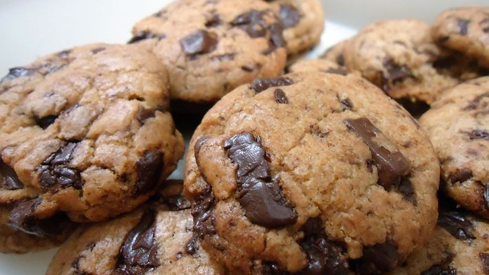

Receita de Cookies com Qualy

Ingredientes:
- 200g de Manteiga Qualy sem sal
- 1/2 xícara (chá) de açucar branco
- 1/2 xícara (chá) de açucar mascavo
- 2 ovos
- 1 colher (chá) de essência/extrato de baunilha
- 2 ½ xícara (chá) de farinha de trigo
- 1 colher (sopa) de amido de milho
- 1 colher (chá) de bicarbonato de sódio
- 1/2 colher (café) de sal
- 1 ½ xícara (chá) de chocolate meio amargo picado em cubos pequenos
Modo de Preparo:
- Em uma batedeira coloque a manteiga em temperatura ambiente e os açúcares. Bata bem, até que obtenha uma mistura clara e aerada;
- Junte os ovos e a essência de baunilha e misture novamente;
- Adicione a farinha, o amido, o bicarbonato e o sal e bata bem, até que os ingredientes incorporem;
- Acrescente os pedaços e chocolate e misture mais uma vez (sem bater)
- Em uma assadeira, faça montinhos com a massa (aproximadamente 1 colher de sopa cheia, se quiser pode utilizar também um pegador de sorvete para porcionar a massa); coloque os montinhos da massa com certa distância um do outro, pois eles irão se espalhar ao assar;
- Leve para gelar no freezer por 20 minutos;
- Em seguida, leve diretamente ao forno pré-aquecido a 180 graus por 15 minutos;
- Sirva.